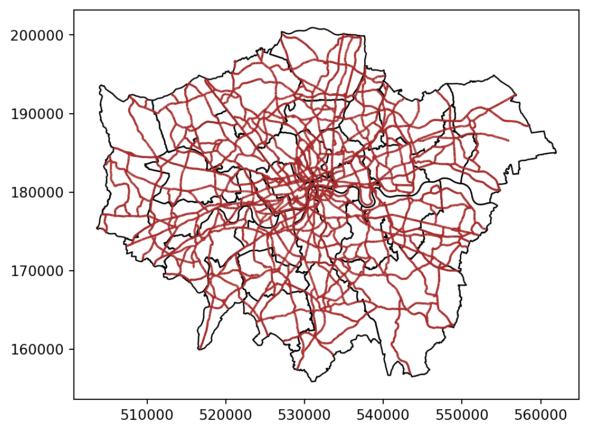

# Import the pandas library, which is useful for data manipulation and analysis.
import pandas as pd
# Import the geopandas library, which extends pandas to support spatial data operations.
import geopandas as gpd
# Import the Point class from the shapely.geometry module, used for handling geometric points.
from shapely.geometry import Point
# Import the osmnx library, which simplifies the process of downloading and analyzing street networks and other geospatial data from OpenStreetMap.
import osmnx as ox
# Import the contextily library, which is used for adding basemaps (like raster tiles) to geospatial plots.
import contextily as cx
# Import the pyplot module from matplotlib, a library for creating static, animated, and interactive visualizations in Python.
import matplotlib.pyplot as plt
# Import the CRS class from pyproj, which provides tools for defining and transforming coordinate reference systems.
from pyproj import CRSLab in Python
In this lab, we will learn how to load, manipulate and visualize spatial data. In some senses, spatial data are usually included simply as “one more column” in a table. However, spatial is special sometimes and there are few aspects in which geographic data differ from standard numerical tables. In this session, we will extend the skills developed in the previous one about non-spatial data, and combine them. In the process, we will discover that, although with some particularities, dealing with spatial data in Python largely resembles dealing with non-spatial data.
Installing libraries
Datasets
Today we are going to go to London. We will be playing around with different datasets loading them both locally and dynamically from the web. You can download data manually, keep a copy on your computer, and load them from there.
Creating geographic data
First we will use the following commands create geographic datasets from scratch representing coordinates of some famous locations in London. Most projects start with pre-generated data, but it’s useful to create datasets to understand data structures.
# Create the DataFrame
data = {
'name': ["The British Museum", "Big Ben", "King's Cross", "The Natural History Museum"],
'lon': [-0.1459604, -0.1272057, -0.1319481, -0.173734],
'lat': [51.5045975, 51.5007325, 51.5301701, 51.4938451]
}
poi_df = pd.DataFrame(data)
# Convert DataFrame to GeoDataFrame
geometry = [Point(xy) for xy in zip(poi_df['lon'], poi_df['lat'])]
poi_gdf = gpd.GeoDataFrame(poi_df, geometry=geometry)
# Set the coordinate reference system (CRS)
poi_gdf.set_crs(epsg=4326, inplace=True)
print(poi_gdf) name lon lat geometry
0 The British Museum -0.145960 51.504598 POINT (-0.14596 51.50460)
1 Big Ben -0.127206 51.500732 POINT (-0.12721 51.50073)
2 King's Cross -0.131948 51.530170 POINT (-0.13195 51.53017)
3 The Natural History Museum -0.173734 51.493845 POINT (-0.17373 51.49385)Types of Data
Now let’s look at the different types of geographical data starting with polygons. We will use a dataset that contains the boundaries of the districts of London. We can read it into an object named districts.
We first import the district shapefile use gpd.read_file, we then plot it to make sure we are seeing it ‘correctly’.
# Read the shapefile for districts
districts = gpd.read_file("data/London/Polygons/districts.shp")
# Create a simple plot
districts.plot()
# Display the plot
plt.show()We them import a file of roads in London and plot it.
# Read the shapefile for A roads
a_roads = gpd.read_file("data/London/Lines/a_roads.shp")
# If you needed to import a `geojson` file, this would be the function:
# a_roads = gpd.read_file("data/London/Lines/a_roads.geojson")
# Create a simple plot of the roads
a_roads.plot()
# Display the plot
plt.show()We can also import point files. So far, we have imported shapefiles and geojsons, but we can also obtain data from urls like in the Open Science DIY session or from other sources like OpenStreetMap. Both R and Python have libraries that allow us to query OpenStreetMap.
Note that we use the method features_from_place, which queries for points in a particular place (London in this case) and creates a GeoDataFrame of OSM features.
# Create an OSM query for "Greater London, U.K."
query = "London, United Kingdom"
restaurants = ox.features_from_place(query, tags={"amenity": ["restaurant", "bar", "pub"]})
# Create a simple plot of the roads
restaurants.plot()
# Display the plot
plt.show()And to inspect the data queried:
restaurants.info()<class 'geopandas.geodataframe.GeoDataFrame'>
MultiIndex: 12197 entries, ('node', 451152) to ('relation', 17299869)
Columns: 572 entries, addr:city to ways
dtypes: geometry(1), object(571)
memory usage: 53.6+ MBYou do not need to know at this point what happens behind the scenes when we run these lines but, if you are curious, we are making a query to OpenStreetMap (almost as if you typed “restaurant in London, UK” within Google Maps) and getting the response as a table of data, instead of as a website with an interactive map. Pretty cool, huh?
Note: the code cells above requires internet connectivity. For more about querying from osm see here.
Important: Be careful, if you query too much data, your environment is likely to get stuck.
Inspecting Spatial Data
Inspecting
Just like a dataframe (see the OpenScience Lab), we can inspect the data (attributes table) within a spatial object. The most direct way to get from a file to a quick visualization of the data is by loading it and calling the plot command. Let’s start by inspecting the data like we did for non spatial dataframes.
We can see our data is very similar to a traditional, non-spatial dataFrame, but with an additional column called geometry.
# Read the first 5 rows of the data
print(districts.head()) DIST_CODE DIST_NAME \
0 00AA City of London
1 00AB Barking and Dagenham
2 00AC Barnet
3 00AD Bexley
4 00AE Brent
geometry
0 POLYGON ((531028.507 181611.160, 531036.062 18...
1 POLYGON ((550817.007 184195.999, 550814.000 18...
2 POLYGON ((526830.313 187535.453, 526830.302 18...
3 POLYGON ((552373.534 174606.900, 552372.893 17...
4 POLYGON ((524661.688 184631.047, 524665.261 18... We can inspect the object in different ways :
# Read the first row
print(districts.iloc[0])
# Read the first column
print(districts.iloc[:, 0])
# Read the first row, first column
print(districts.iloc[0, 0])
# Read the column "DIST_NAME"
print(districts['DIST_NAME'])DIST_CODE 00AA
DIST_NAME City of London
geometry POLYGON ((531028.5069610038 181611.15961117705...
Name: 0, dtype: object
0 00AA
1 00AB
2 00AC
3 00AD
4 00AE
5 00AF
6 00AG
7 00AH
8 00AJ
9 00AK
10 00AL
11 00AM
12 00AN
13 00AP
14 00AQ
15 00AR
16 00AS
17 00AT
18 00AU
19 00AW
20 00AX
21 00AY
22 00AZ
23 00BA
24 00BB
25 00BC
26 00BD
27 00BE
28 00BF
29 00BG
30 00BH
31 00BJ
32 00BK
Name: DIST_CODE, dtype: object
00AA
0 City of London
1 Barking and Dagenham
2 Barnet
3 Bexley
4 Brent
5 Bromley
6 Camden
7 Croydon
8 Ealing
9 Enfield
10 Greenwich
11 Hackney
12 Hammersmith and Fulham
13 Haringey
14 Harrow
15 Havering
16 Hillingdon
17 Hounslow
18 Islington
19 Kensington and Chelsea
20 Kingston upon Thames
21 Lambeth
22 Lewisham
23 Merton
24 Newham
25 Redbridge
26 Richmond upon Thames
27 Southwark
28 Sutton
29 Tower Hamlets
30 Waltham Forest
31 Wandsworth
32 Westminster
Name: DIST_NAME, dtype: objectWe can read or create subsets:
# dataframe can be subsetted using conditional statement
# read the rows which have "City of London" as value for DIST_NAME
# Filter rows where 'DIST_NAME' is 'City of London'
filtered_districts = districts[districts['DIST_NAME'] == 'City of London']
print(filtered_districts) DIST_CODE DIST_NAME geometry
0 00AA City of London POLYGON ((531028.507 181611.160, 531036.062 18...Quick visualisation
Let’s start by plotting London in a colour and adding Hackney (a district) in a different colour.
# Plot London in grey
fig, ax = plt.subplots()
districts.plot(ax=ax, color='lightgrey')
# Add city of London (Hackney) in turquoise to the map
hackney = districts[districts['DIST_NAME'] == 'Hackney']
hackney.plot(ax=ax, color='turquoise')
plt.show()Some guidance on colours in Python can be found here.
Styling plots
It is possible to tweak many aspects of a plot to customize if to particular needs. In this section, we will explore some of the basic elements that will allow us to obtain more compelling maps.
Note: some of these variations are very straightforward while others are more intricate and require tinkering with the internal parts of a plot. They are not necessarily organized by increasing level of complexity.
Plotting different layers
We first start by plotting one layer over another
# Plotting the geometries
fig, ax = plt.subplots()
# Plot districts with no fill (transparent fill)
districts.plot(ax=ax, edgecolor='black', facecolor='none') # No fill, only border
# Plot roads with transparency
a_roads.plot(ax=ax, color='brown') # Roads in brown
plt.show()
Changing transparency
The intensity of color of a polygon can be easily changed through the alpha attribute in plot. This is specified as a value betwee zero and one, where the former is entirely transparent while the latter is the fully opaque (maximum intensity):
# Plotting the geometries
fig, ax = plt.subplots()
# Plot districts with no fill (transparent fill)
districts.plot(ax=ax, edgecolor='black', facecolor='none') # No fill, only border
# Plot roads with transparency
a_roads.plot(ax=ax, color='brown', alpha=0.5) # Roads in brown
plt.show()Removing axes
Although in some cases, the axes can be useful to obtain context, most of the times maps look and feel better without them. Removing the axes involves wrapping the plot into a figure, which takes a few more lines of aparently useless code but that, in time, it will allow you to tweak the map further and to create much more flexible designs.
# Plotting the geometries
fig, ax = plt.subplots()
# Plot districts with no fill (transparent fill)
districts.plot(ax=ax, edgecolor='black', facecolor='none') # No fill, only border
# Plot roads with transparency
a_roads.plot(ax=ax, color='brown', alpha=0.5) # Roads with 50% transparency
# Remove the axis
ax.axis('off')
plt.show()Let us stop for a second a study each of the previous lines:
We have first created a figure named fig with one axis named ax by using the command plt.subplots (part of the library matplotlib, which we have imported at the top of the notebook). Note how the method is returning two elements and we can assign each of them to objects with different name (fig and ax) by simply listing them at the front of the line, separated by commas.
Second, we plot the geographies as before, but this time we tell the function that we want it to draw the polygons on the axis we are passing, ax. This method returns the axis with the geographies in them, so we make sure to store it on an object with the same name, ax.
On the third line, we effectively remove the box with coordinates.
Finally, we draw the entire plot by calling plt.show().
Adding a title
Adding a title is an extra line, if we are creating the plot within a figure, as we just did. To include text on top of the figure:
# Plotting the geometries
fig, ax = plt.subplots()
# Plot districts with no fill (transparent fill)
districts.plot(ax=ax, edgecolor='black', facecolor='none') # No fill, only border
# Plot roads with transparency
a_roads.plot(ax=ax, color='brown', alpha=0.5) # Roads with 50% transparency
# Remove the axis
ax.axis('off')
# Add figure title
fig.suptitle("Main roads in London")
# Display
plt.show()Changing what border lines look like
Border lines sometimes can distort or impede proper interpretation of a map. In those cases, it is useful to know how they can be modified. Let us first see the code to make the lines thicker and black, and then we will work our way through the different steps:
# Convert CRS from WGS 84 (EPSG:4326) to British National Grid (EPSG:27700)
poi_gdf_bng = poi_gdf.to_crs(epsg=27700)
# Plotting the geometries
fig, ax = plt.subplots()
# Plot districts with no fill, black borders
districts.plot(ax=ax, edgecolor='black', facecolor='none')
# Plot roads with brown color and 50% transparency
a_roads.plot(ax=ax, color='brown', alpha=0.5)
# Plot restaurants with blue color and adjusted size
poi_gdf_bng.plot(ax=ax, edgecolor='blue', facecolor='blue', markersize=100)# Adjust size accordingly
# Remove the axis for a clean look
ax.axis('off')
# Add figure title
fig.suptitle("Main roads in London")
# Display the plot
plt.show()Labelling
Labeling maps is of paramount importance as it is often key when presenting data analysis and visualization. Properly labeled maps enables readers to effectively analyze and interpret spatial data.
iterrows()is a pandas function that iterates over DataFrame rows as (index, Series) pairs. Here,idxis the index of the row, and row is apandasseries containing the data for that particular district.centroid = row['geometry'].centroidgets the centroid of each district’s geometry.row['geometry']refers to the geometry of the district, which could be a polygon or a multipolygon..centroidcomputes the geometric center (centroid) of this polygon.ax.text()is a method fromMatplotlib, used to place text at specific coordinates on the plot.centroid.xandcentroid.yprovide the x and y coordinates of the centroid, which determine where the text will be placed.row['DIST_NAME']is the name of the district that will be displayed as the label.fontsize=6sets the size of the text to 8 points.ha='center'ensures that the text is horizontally aligned to the center of the specified coordinates.
# Plot the districts with a gray fill
fig, ax = plt.subplots()
districts.plot(ax=ax, edgecolor="black", facecolor='none')
# Add text labels at the centroids of the districts
for idx, row in districts.iterrows():
centroid = row['geometry'].centroid
ax.text(centroid.x, centroid.y, row['DIST_NAME'], fontsize=6, ha='center')
# Remove axis
ax.set_axis_off()
plt.show()
Coordinate reference Systems
CRSs in Python
Coordindate reference systems (CRS) are the way geographers and cartographers represent a three-dimentional objects, such as the round earth, on a two-dimensional plane, such as a piece of paper or a computer screen. If the source data contain information on the CRS of the data, we can modify this.
First we need to retrieve the CRS from the vector data.
# Retrieve the CRS from the GeoDataFrame
crs = districts.crs
# Print the CRS information
print(crs)EPSG:27700We can also retrieve some additional information about the used CRS. For example, try to run:
# Check if the CRS is geographic or not
is_geographic = CRS(crs).is_geographic
# Find out the CRS units
units_gdal = CRS(crs).axis_info[0].unit_name if CRS(crs).axis_info else None
# Extract the SRID
srid = CRS(crs).to_epsg()
# Extract the proj4string representation
proj4string = CRS(crs).to_proj4()
# Print results
print(f"Is Geographic: {is_geographic}")
print(f"Units (GDAL): {units_gdal}")
print(f"SRID: {srid}")
print(f"Proj4 String: {proj4string}")Is Geographic: False
Units (GDAL): metre
SRID: 27700
Proj4 String: +proj=tmerc +lat_0=49 +lon_0=-2 +k=0.9996012717 +x_0=400000 +y_0=-100000 +ellps=airy +units=m +no_defs +type=crs/Users/pietrost/.virtualenvs/r-reticulate/lib/python3.9/site-packages/pyproj/crs/crs.py:1293: UserWarning: You will likely lose important projection information when converting to a PROJ string from another format. See: https://proj.org/faq.html#what-is-the-best-format-for-describing-coordinate-reference-systems
proj = self._crs.to_proj4(version=version)As we can see, there is information stored about the reference system: it is using the standard British projection (British National Grid EPSG:27700), which is expressed in meters. There are also other less decipherable parameters but we do not need to worry about them right now.
If we want to modify this and “reproject” the polygons into a different CRS, the quickest way is to find the EPSG code online (epsg.io is a good one, although there are others too). For example, if we wanted to transform the dataset into lat/lon coordinates, we would use its EPSG code, 4326 (CRS’s name “WGS84”):
In cases when a coordinate reference system (CRS) is missing or the wrong CRS is set, the .to_crs function can be used:
# Transform the CRS to EPSG:4326
districts_4326 = districts.to_crs(epsg=4326)
# Optionally, print the new CRS to verify
print(districts_4326.crs)EPSG:4326From coordinates to spatial objects
CRSs are also very useful if we obtain data that is in a csv, has coordinates but needs to be transformed to a GeoDataFrame. For example we have some London housing transactions we want to import and use.
We want to transform the .csv in a GeoDataFrame using the coordinates stored in columns 17 and 18, and then we set the GeoDataFrame CRS to the British National Grid (EPSG:27700).
# Import housesales data from CSV
housesales = pd.read_csv("data/London/Tables/housesales.csv")
# Filter housesales to include only those with price less than 500000
housesales_f = housesales[housesales['price'] < 500000]
# Assume columns 17 and 18 are 'longitude' and 'latitude' respectively
housesales_gdf = gpd.GeoDataFrame(
housesales_f, geometry=gpd.points_from_xy(housesales_f.greastings, housesales_f.grnorthing), crs="EPSG:27700"
)
print(housesales_gdf.head()) propid price lnprice advance age bathroom bedroom buyage centheat \
0 1 105000 12 85000 18 1 2 25 1
1 2 84000 11 79800 31 1 1 47 0
2 3 89000 11 84550 16 1 1 30 0
3 4 136000 12 106000 31 2 4 32 2
4 5 103550 12 88000 31 1 2 38 1
chelec ... psemi pterrace popdens prkdouble prknone prksingle \
0 0 ... 0 0 3 0 0 0
1 0 ... 0 0 0 0 0 0
2 0 ... 0 1 23 0 1 0
3 1 ... 0 1 23 0 1 0
4 0 ... 0 0 39 0 0 1
prkspace tenfree tenlease geometry
0 1 0 1 POINT (504998.000 188930.000)
1 1 0 1 POINT (505026.000 177041.000)
2 0 1 0 POINT (505049.000 189030.000)
3 0 1 0 POINT (505087.000 189238.000)
4 0 0 1 POINT (505132.000 183300.000)
[5 rows x 34 columns]Zooming in or out
It’s important to know what CRS your data is in if you want to create zoomed versions of your maps. BBox finder is a useful tool to identify coordinates in EPSG:4326.
Here for example we are zooming in to some of the point we created at the beginning of the lab.
# Create a plot
fig, ax = plt.subplots(figsize=(10, 10))
# Plot the districts
districts_4326.plot(ax=ax, color='none', edgecolor='black')
# Plot the points of interest
poi_gdf.plot(ax=ax, color='blue', markersize=50)
# Set the coordinate limits
ax.set_xlim(-0.180723, -0.014212)
ax.set_ylim(51.476668, 51.532337)
# Remove axis labels and ticks
ax.set_axis_off()
# Show the plot
plt.show()Manipulating Spatial Tables
Once we have an understanding of how to visually display spatial information contained, let us see how it can be combined with the operations related to manipulating non-spatial tabular data. Essentially, the key is to realize that a GeoDataFrame contain most of its spatial information in a single column named geometry, but the rest of it looks and behaves exactly like a non-spatial dataframe (in fact, it is). This concedes them all the flexibility and convenience that we saw in manipulating, slicing, and transforming tabular data, with the bonus that spatial data is carried away in all those steps. In addition, GeoDataFrame also incorporate a set of explicitly spatial operations to combine and transform data. In this section, we will consider both.
GeoDataFrames come with a whole range of traditional GIS operations built-in. Here we will run through a small subset of them that contains some of the most commonly used ones.
One of the spatial aspects we often need from polygons is their area. “How big is it?” is a question that always haunts us when we think of countries, regions, or cities. To obtain area measurements, first make sure the GeoDataFrame you are working with is projected. If that is the case, you can calculate areas as follows:
We had already checked that district was projected to the British National Grid
districts_areas = districts.area
districts_areas.head()
areas_in_sqkm = districts_areas / 1000000 #convert into squared kilometres
areas_in_sqkm.head()0 3.151465
1 37.778900
2 86.736434
3 64.263476
4 43.235288
dtype: float64Similarly, an equally common question with lines is their length. Also similarly, their computation is relatively straightforward, provided that our data are projected.
street_length = a_roads.length
street_length.head()0 7.695310
1 374.714434
2 417.493662
3 45.221697
4 1748.445461
dtype: float64If you check the dataframe you will see the lengths.
Sometimes it is useful to summarize a polygon into a single point and, for that, a good candidate is its centroid (almost like a spatial analogue of the average).
# Create a dataframe with centroids
cents = districts.centroid
cents.head()0 POINT (532464.075 181219.688)
1 POINT (548021.148 184939.599)
2 POINT (524027.452 192316.258)
3 POINT (548927.608 175720.862)
4 POINT (520176.906 185829.122)
dtype: geometryTo create a buffer using geopandas, simply call the buffer method, passing in the radious. For example, to draw a 1000m. buffer around every centroid of every district:
# buffer
buf = cents.buffer(1000)
buf.head()0 POLYGON ((533464.075 181219.688, 533459.260 18...
1 POLYGON ((549021.148 184939.599, 549016.333 18...
2 POLYGON ((525027.452 192316.258, 525022.637 19...
3 POLYGON ((549927.608 175720.862, 549922.793 17...
4 POLYGON ((521176.906 185829.122, 521172.091 18...
dtype: geometry# Create a plot
fig, ax = plt.subplots(figsize=(10, 10))
# Plot the districts
districts.plot(ax=ax, color='none', edgecolor='black')
# Plot the centroids
cents.plot(ax=ax, color='black', markersize=20, edgecolor='none')
# Plot the centroid buffers
buf.plot(ax=ax, color='none', alpha=0.5, edgecolor='red')
# Set minimal theme by removing axes and grid
ax.set_axis_off()
# Show the plot
plt.show()